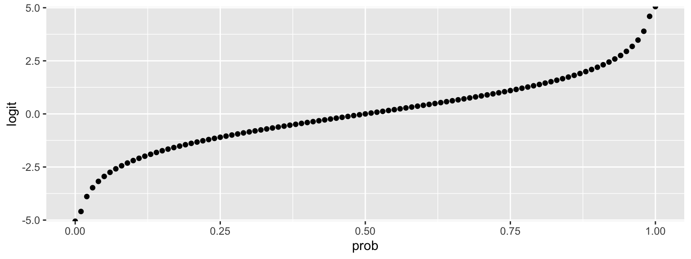

appendix3_binomial.RmdTo give an overview of the simulation task, we will simulate data from a design with crossed random factors of subjects and stimuli, fit a model to the simulated data, and then try to recover the parameter values we put in from the output. In this hypothetical study, subjects classify the emotional expressions of faces as quickly as possible, and we use accuracy (correct/incorrect) as the primary dependent variable. The faces are of two types: either from the subject’s ingroup or from an outgroup. For simplicity, we further assume that each face appears only once in the stimulus set. The key question is whether there is any difference in classification accuracy across the type of face.
The important parts of the design are:
tau)omega)# load required packages library("lme4") # model specification / estimation library("afex") # anova and deriving p-values from lmer library("broom.mixed") # extracting data from model fits library("faux") # data simulation library("tidyverse") # data wrangling and visualisation # ensure this script returns the same results on each run set.seed(8675309) faux_options(verbose = FALSE)
This example presents a simulation for a binomial logistic mixed regression. Part of the process involves conversion between probability and the logit function of probability. The code below converts between these.
logit <- function(x) { log(x / (1 - x)) } inv_logit <- function(x) { 1 / (1 + exp(-x)) } data.frame( prob = seq(0,1,.01) ) %>% mutate(logit = logit(prob)) %>% ggplot(aes(prob, logit)) + geom_point()

The data generating process is slighly different for binomial logistic regression. The random effects and their correlations are set the same way as for a gaussian model (you’ll need some pilot data to estimate reasonable parameters), but we don’t need an error term.
# set up the custom data simulation function my_bin_data <- function( tau_n = 100, # number of subjects omega_n = 50, # number of items per category b0 = 0, # intercept b1 = 0, # effect of category omega_0 = 1, # by-item random intercept sd tau_0 = 1, # by-subject random intercept sd tau_1 = 1, # by-subject random slope sd tau_r = 0 # correlation between intercept and slope ) { # simulate a sample of items items <- data.frame( item_id = 1:(omega_n*2), category = rep(c("ingroup", "outgroup"), omega_n), O0i = rnorm(omega_n*2, 0, omega_0) ) # effect code category items$cat <- recode(items$category, "ingroup" = -0.5, "outgroup" = 0.5) # simulate a sample of subjects subjects <- faux::rnorm_multi( n = tau_n, mu = 0, sd = c(tau_0, tau_1), r = tau_r, varnames = c("T0s", "T1s") ) subjects$subj_id <- 1:tau_n # simulate trials dat_sim <- crossing(subj_id = subjects$subj_id, item_id = items$item_id) %>% inner_join(subjects, "subj_id") %>% inner_join(items, "item_id") %>% mutate(Y = b0 + I0i + S0s + (b1 + S1s) * cat, # calculate gaussian DV pr = inv_logit(Y), # transform to probability of getting 1 Y_bin = rbinom(nrow(.), 1, pr)) %>% # sample from bernoulli distribution select(subj_id, item_id, category, cat, Y, Y_bin) dat_sim } # set up the power function my_glmer_power <- function(...) { # ... is a shortcut that forwards any arguments to my_sim_data() dat_sim <- my_bin_data(...) mod_sim <- glmer(Y_bin ~ 1 + cat + (1 | item_id) + (1 + cat | subj_id), data = dat_sim, family = "binomial") broom.mixed::tidy(mod_sim) }
# run simulations prob2param <- function(a = 0, b = 0) { list( b0 = (logit(a) + logit(b))/2, b1 = logit(a) - logit(b) ) } reps <- 5 b = prob2param(.4, .6) tau_0 = 1 tau_1 = 1 omega_0 = 1 tau_r = 0.5 filename <- "sims/binomial.csv"
# run simulations and save to a file on each rep sims <- replicate(reps, { sim <- my_glmer_power(b0 = b$b0, b1 = b$b1, tau_0 = tau_0, tau_1 = tau_1, omega_0 = omega_0, tau_r = tau_r) # check if there are already simulations # saved to file and add them append <- file.exists(filename) write_csv(sim, filename, append = append) })
The chunk above is set to not evaluate when you knit this file; it just reads the saved data from the file. The code below calculates the mean estimates and power for each group.
# read saved simulation data sims <- read_csv(filename) est <- sims %>% group_by(group, term) %>% summarise( mean_estimate = mean(estimate), .groups = "drop" ) int_est <- filter(est, is.na(group), term == "(Intercept)") %>% pull(mean_estimate) cat_est <- filter(est, is.na(group), term == "cat") %>% pull(mean_estimate) pr0 <- inv_logit(int_est) %>% round(2) pr1_plus <- inv_logit(int_est + .5*cat_est) %>% round(2) pr1_minus <- inv_logit(int_est - .5*cat_est) %>% round(2) est %>% arrange(!is.na(group), group, term) %>% mutate( sim = c(b$b0, b$b1, omega_0, tau_r, tau_0, tau_1), prob = c(pr0, paste0(pr1_minus, ":", pr1_plus), rep(NA, 4)) ) %>% mutate_if(is.numeric, round, 2)
## # A tibble: 6 x 5
## group term mean_estimate sim prob
## <chr> <chr> <dbl> <dbl> <chr>
## 1 <NA> (Intercept) 0.03 0 0.51
## 2 <NA> cat -0.96 -0.81 0.63:0.39
## 3 item_id sd__(Intercept) 0.98 1 <NA>
## 4 subj_id cor__(Intercept).cat 0.51 0.5 <NA>
## 5 subj_id sd__(Intercept) 1 1 <NA>
## 6 subj_id sd__cat 0.95 1 <NA>In this example, 100 subjects will respond twice (for happy and angry expressions) to 50 items; 25 items in each of 2 categories. In this example, expression is a within-subject and within-item factor and category is a within-subject and between-item factor.
ext_bin_data <- function( tau_n = 100, # number of subjects/btwn-grp omega_n = 25, # number of items/btwn-grp b0 = 0, # grand mean b_cat = 0, # main effect of category b_exp = 0, # main effect of expression b_cat_exp = 0, # interaction between category and expression omega_0 = 1, # by-item random intercept sd Iexp_sd = 1, # by-item random slope for exp icor = 0, # by-item random effect correlation tau_0 = 1, # by-subject random intercept sd Scat_sd = 1, # by-subject random slope sd for category Sexp_sd = 1, # by-subject random slope sd for exp Scat_exp_sd = 1, # by-subject random slope sd for category*exp # by-subject random effect correlations tau_r = c(0, 0, 0, # S0s * cat, exp, tc 0, 0, # cat * exp, tc 0) # exp * tc ) { # simulate items items <- faux::sim_design( within = list(components = c("I0i", "Iexp")), between = list(category = c("ingroup", "outgroup")), n = omega_n, sd = data.frame(I0i = omega_0, Iexp = Iexp_sd), r = icor, id = "item_id", plot = FALSE ) # simulate subjects subjects <- faux::sim_design( within = list(components = c("S0s", "Scat", "Sexp", "Scat_exp")), n = tau_n, sd = c(S0s = tau_0, Scat = Scat_sd, Sexp = Sexp_sd, Scat.exp = Scat_exp_sd), r = tau_r, id = "subj_id", plot = FALSE ) # simulate trials dat_sim <- crossing( subj_id = subjects$subj_id, item_id = items$item_id, expression = factor(c("happy", "angry"), ordered = TRUE) ) %>% inner_join(subjects, "subj_id") %>% inner_join(items, "item_id") %>% mutate(exp = recode(expression, "happy" = -0.5, "angry" = 0.5), cat = recode(category, "ingroup" = -0.5, "outgroup" = +0.5), trial_i = b0 + I0i + S0s, trial_cat = b_cat + Scat, trial_exp = b_exp + Iexp + Sexp, trial_ct = b_cat_exp + Scat.exp, Y = trial_i + (trial_cat*cat) + (trial_exp*exp) + (trial_ct*cat*exp), pr = inv_logit(Y), Y_bin = rbinom(nrow(.), 1, pr)) dat_sim } ext_bin_func <- function(...) { dat_sim <- ext_bin_data(...) mod_sim <- glmer(Y_bin ~ 1 + cat*exp + (1 + exp | item_id) + (1 + cat*exp | subj_id), data = dat_sim, family = "binomial") broom.mixed::tidy(mod_sim) }
# run simulations prob2param <- function(angry_ingroup = 0, angry_outgroup = 0, happy_ingroup = 0, happy_outgroup = 0) { ai <- logit(angry_ingroup) ao <- logit(angry_outgroup) hi <- logit(happy_ingroup) ho <- logit(happy_outgroup) list( b0 = mean(c(ai,ao,hi,ho)), b_cat = (ao+ho) - (ai+hi), b_exp = (ao+ai) - (ho+hi), b_cat_exp = (ao-ai) - (ho-hi) ) } reps <- 10 b = prob2param(.5, .6, .4, .5) filename <- "sims/binomial2.csv"
# run simulations and save to a file on each rep sims <- replicate(reps, { sim <- ext_bin_func(b0 = b$b0, b_cat = b$b_cat, b_exp = b$b_exp, b_cat_exp = b$b_cat_exp) # check if there are already simulations # saved to file and add them append <- file.exists(filename) write_csv(sim, filename, append = append) })
# read saved simulation data sims <- read_csv(filename) est <- sims %>% filter(effect == "fixed") %>% group_by(term) %>% summarise( mean_estimate = mean(estimate), .groups = "drop" ) est %>% mutate( sim = c(b$b0, b$b_cat, b$b_cat_exp, b$b_exp) ) %>% mutate_if(is.numeric, round, 2)
## # A tibble: 4 x 3
## term mean_estimate sim
## <chr> <dbl> <dbl>
## 1 (Intercept) 0.02 0
## 2 cat 0.71 0.81
## 3 cat:exp 0.22 0
## 4 exp 0.84 0.81Sum estimates for each cell and use inverse logit transform to recover probabilities.
int <- est[[1,2]] cat <- est[[2,2]] exp <- est[[4,2]] cat_exp <- est[[3,2]] data.frame( angry_outgroup = inv_logit(int + .5*cat + .5*exp + .5*.5*cat_exp), angry_ingroup = inv_logit(int - .5*cat + .5*exp - .5*.5*cat_exp), happy_outgroup = inv_logit(int + .5*cat - .5*exp - .5*.5*cat_exp), happy_ingroup = inv_logit(int - .5*cat - .5*exp + .5*.5*cat_exp) ) %>% gather(key, val, 1:4) %>% separate(key, c("exp", "cat")) %>% spread(cat, val) %>% mutate_if(is.numeric, round, 2)
## exp ingroup outgroup
## 1 angry 0.51 0.70
## 2 happy 0.33 0.47